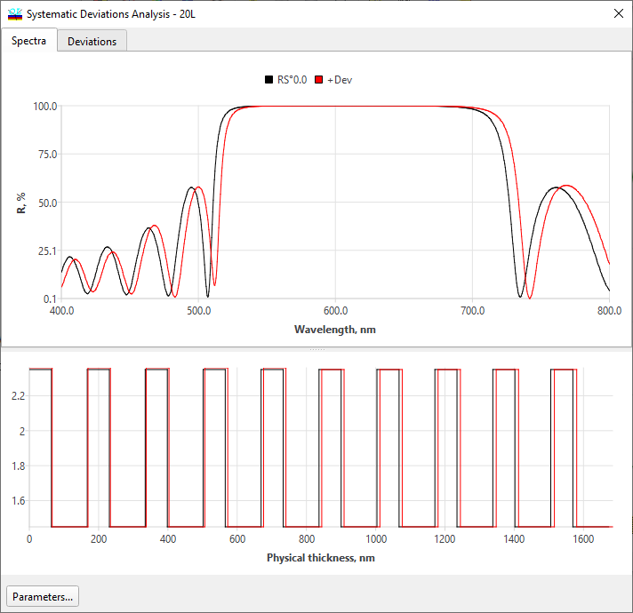
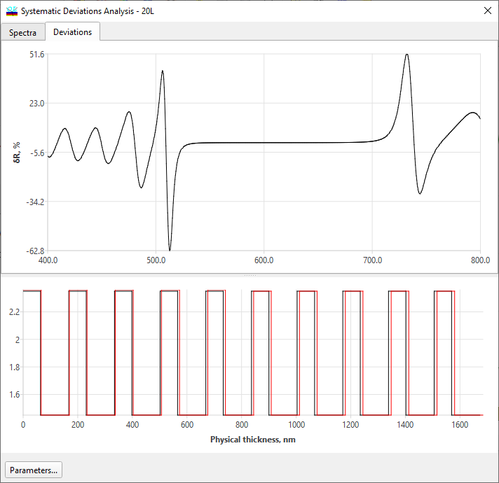

Systematic Deviations Analysis
Systematic Deviations Analysis
This Analysis option allows for evaluating the influence of systematic deviations in layer thicknesses and refractive indices on design spectral characteristics.

The Systematic Deviations window looks similar to other evaluation windows, except at the bottom of this window, you can see the design refractive index profile corresponding to the deviations specified in Systematic Deviations Setup.
In some cases, it is more convenient to study only deviations of spectral characteristics due to the systematic deviations effects. In the second tab of this window, these deviations are displayed.

See also: